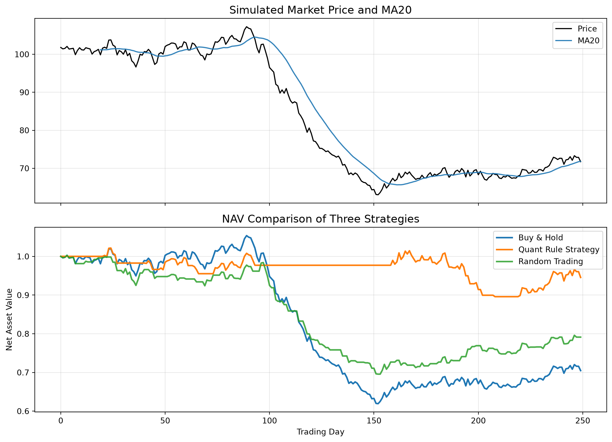

# ========== 导入本实验需要的库 ==========
import numpy as np # 做数值计算（随机数、累乘价格等）
import pandas as pd # 处理表格数据（像 Excel 一张表）
import matplotlib.pyplot as plt # 画折线图、对比图
import os
import warnings
warnings.filterwarnings("ignore", category=UserWarning, module="matplotlib")
plt.rcParams["axes.unicode_minus"] = False # 让坐标轴上的负号正常显示
plt.rcParams["font.sans-serif"] = ["DejaVu Sans", "Arial", "sans-serif"] # 新增这一行
np.random.seed(7) # 固定随机种子：每次运行随机数相同，方便对照
# ========== 第1步：模拟三段行情（涨→跌→恢复）==========
n1, n2, n3 = 90, 40, 120 # 三个阶段分别有多少个交易日
ret = np.r_[ # 把三段「日收益率」拼成一条长数组
np.random.normal(0.0010, 0.010, n1), # 阶段1：平均每天略涨，波动较小
np.random.normal(-0.012, 0.015, n2), # 阶段2：平均每天偏跌，波动更大
np.random.normal(0.0012, 0.012, n3), # 阶段3：震荡恢复
] # 数组拼接结束
price = 100 * np.cumprod(1 + ret) # 起点100元，每天按 (1+收益率) 连乘得到价格
# ========== 第2步：做成 DataFrame，并算每日涨跌比例 ==========
df = pd.DataFrame({"close": price}) # 把价格放进表格，列名叫 close
df["ret"] = df["close"].pct_change().fillna(0) # pct_change = 日收益率；第一天填 0
# ========== 第3步：量化规则——收盘价在MA20上方就持有 ==========
df["ma20"] = df["close"].rolling(20).mean() # rolling(20).mean() = 20日移动平均线
df["signal_quant"] = (df["close"] > df["ma20"]).astype(int) # 高于均线记1，否则记0
# ========== 第4步：随机买卖策略（对照组，乱买乱卖）==========
rng = np.random.default_rng(7) # 随机数生成器（种子7）
df["signal_random"] = rng.integers(0, 2, size=len(df)) # 每天随机 0 或 1
# ========== 第5步：算各策略的日收益（信号用昨天的，避免偷看未来）==========
df["ret_quant"] = df["signal_quant"].shift(1).fillna(0) * df["ret"] # 量化策略收益
df["ret_random"] = df["signal_random"].shift(1).fillna(0) * df["ret"] # 随机策略收益
df["ret_buyhold"] = df["ret"] # 买入并持有：天天在场
# ========== 第6步：把日收益连乘成「净值曲线」（起点相当于1块钱）==========
for col in ["ret_quant", "ret_random", "ret_buyhold"]: # 遍历三种收益列
df[f"nav_{col}"] = (1 + df[col]).cumprod() # (1+r) 连乘 = 累计净值
# ========== 第7步：画图——上图价格+均线，下图三种净值 ==========
fig, axes = plt.subplots(2, 1, figsize=(11, 8), sharex=True) # 2行1列子图，共用横轴
axes[0].plot(df["close"], label="Price", color="black", linewidth=1.4) # 模拟收盘价
axes[0].plot(df["ma20"], label="MA20", color="tab:blue", alpha=0.9) # MA20
axes[0].set_title("Simulated Market Price and MA20", fontsize=14)
axes[0].legend()
axes[0].grid(True, alpha=0.3)
axes[1].plot(df["nav_ret_buyhold"], label="Buy & Hold", linewidth=2) # 买入持有净值
axes[1].plot(
df["nav_ret_quant"], label="Quant Rule Strategy", linewidth=2
) # 规则策略净值
axes[1].plot(
df["nav_ret_random"], label="Random Trading", linewidth=2, alpha=0.85
) # 随机策略
axes[1].set_title("NAV Comparison of Three Strategies", fontsize=14)
axes[1].legend()
axes[1].grid(True, alpha=0.3)
axes[1].set_xlabel("Trading Day")
axes[1].set_ylabel("Net Asset Value")
plt.tight_layout() # 自动调整子图间距，避免标签被裁切
plt.show() # 在 Notebook 里显示图片